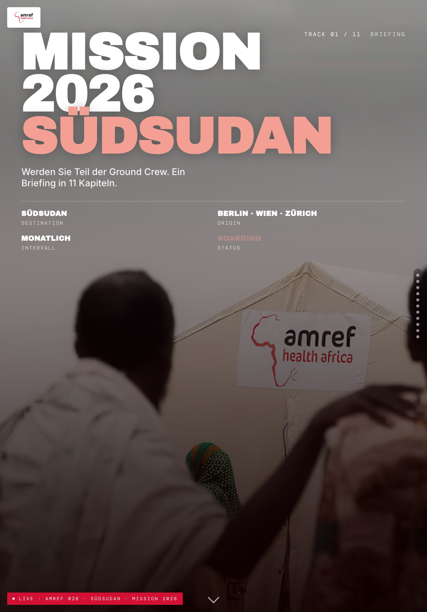
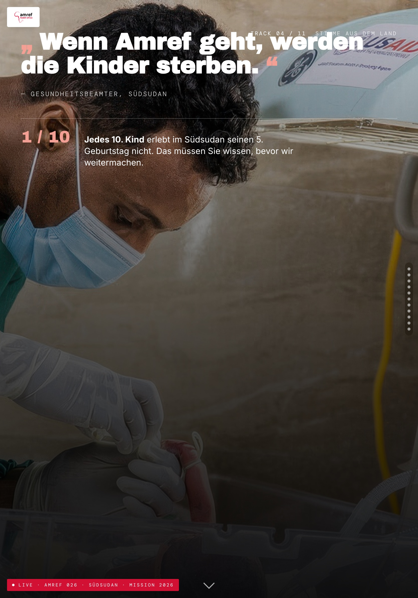
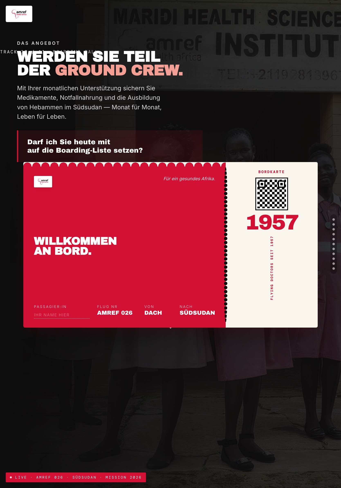

Ein Deck. Ein Ziel.
Das Ja zur Dauerspende.
F2F-Pitch am Tablet · 60–90 Sekunden Aufmerksamkeit · jede Slide muss sofort wirken.
Knowledge Transfer · Customer Care
Von der Brand-Analyse zum fertigen Street-Pitch — mit Claude Code.
Ein Deck. Ein Ziel.
Das Ja zur Dauerspende.
F2F-Pitch am Tablet · 60–90 Sekunden Aufmerksamkeit · jede Slide muss sofort wirken.
Das bauen wir



Amref Health Africa — mit Claude Code gebaut. HTML + CSS, offline, am Tablet. Referenz: _kit/beispiel/
Agenda
Ein Tool. Ein Ordner pro Kunde. Kein weiteres Setup.
Werkzeuge
Vorlage liegt bereit: _kit/kunden-template/ kopieren, umbenennen, fertig.
Setup
15 Minuten sammeln spart 2 Stunden iterieren.
Nicht verhandelbar
Niemals JavaScript. Läuft auf jedem Tablet — offline, ohne Setup.
Entwickeln mit normalen Bildpfaden. Verpackt wird ganz am Ende — in eine Datei.
Farben, Fonts, Logo exakt wie im Brand-Guide. Nichts erfinden — fragen.
Die Regeln stehen im Kunden-Template (CLAUDE.md) — Claude Code hält sie automatisch ein.
Fünf Schritte. Ein fertiges Deck.
Der Workflow
Schritt 1
Material
Alles in ressourcen/.
Schritt 2
Brand-Analyse
Claude erstellt BRAND.md.
Schritt 3
Konzept
Slide-Plan — noch kein Code.
Schritt 4
Build
Das Deck entsteht.
Schritt 5
Testen & Verpacken
Iterieren, dann eine Datei.
Für jeden Schritt liegt ein fertiger Prompt in der Library.
Schritt 2 · Brand-Analyse
Ein Workflow — jede Brand

Schritt 3 · Konzept
Hook
Stoppt die Person.
Problem
Konkret. Ein Kind, ein Ort.
Hoffnung
Die Organisation als Held:in.
Impact
Was 15 € im Monat bewirken.
Ask
Der Höhepunkt. Eine echte Frage.
Konzept lesen und freigeben — erst dann wird gebaut.
Schritt 4 · Build
Schritt 5 · Iterieren
Schritt 5 · Verpacken
HTML-Datei — alles eingebettet
Externe Abhängigkeiten
Offline einsatzbereit
Der finale Test: Flugmodus an, Datei öffnen. Alles da? Ship it.
Ein fertiger Prompt für jeden Schritt.
Die Prompt-Library
Plus 06 Troubleshooting. Alles in support-cc/Pitchdecks/_kit/prompt-library/
So sieht das aus
Ein Prompt pro Schritt. Kopieren, einfügen, Enter — mehr ist es nicht.
Jetzt ihr. Das Material liegt bereit.
Übung · 30 Minuten
Zum Vergleichen: _kit/beispiel/ — das fertige Amref-Deck.
Nächster Schritt
_kit/kunden-template/ · formunauts.com